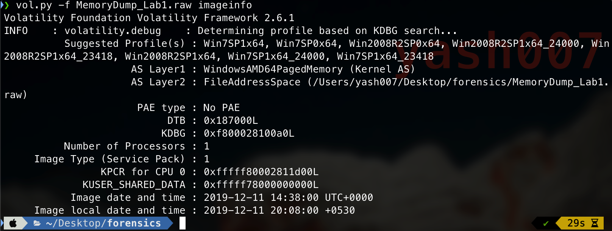
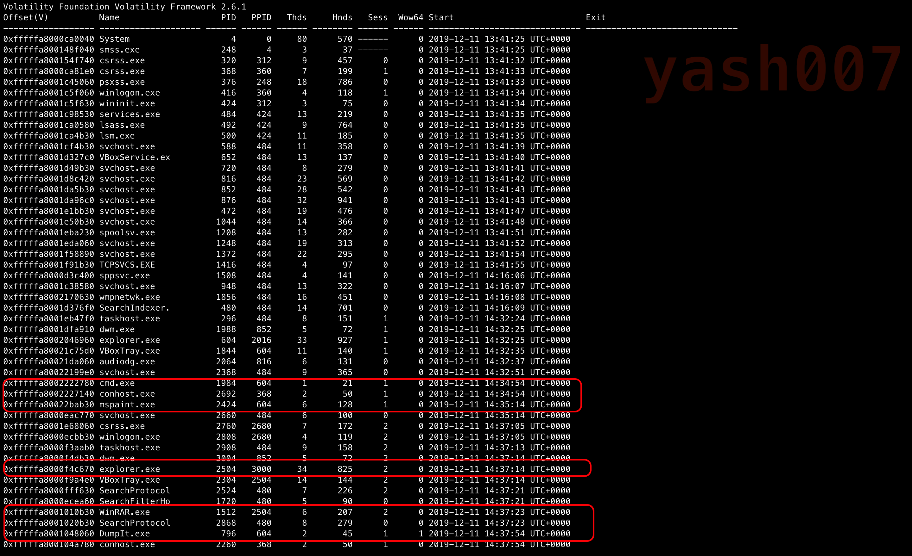
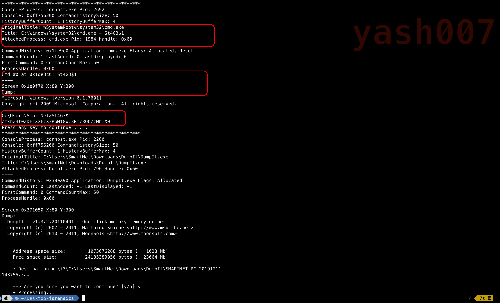
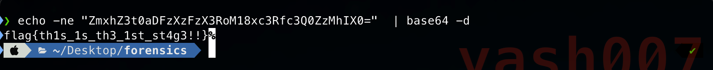
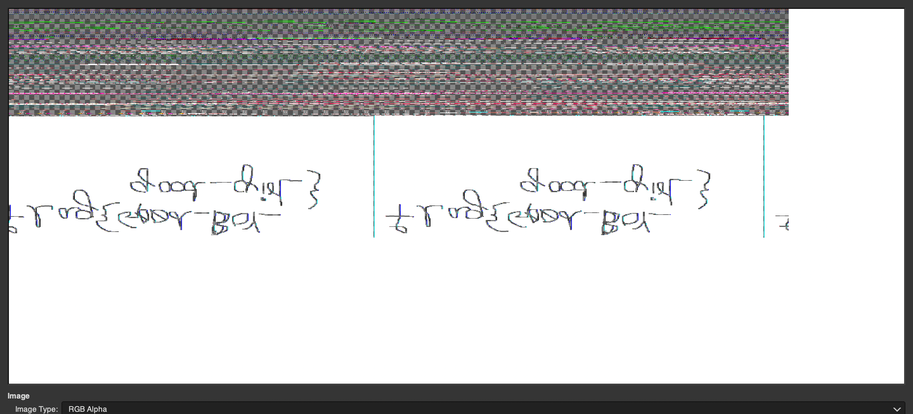
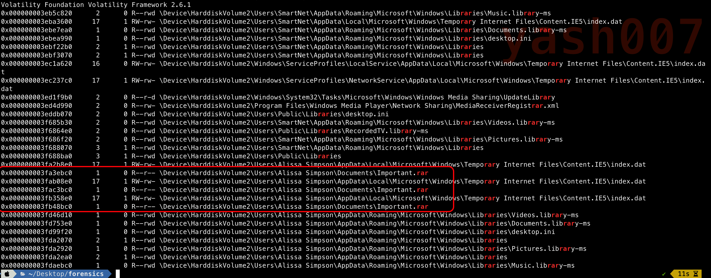
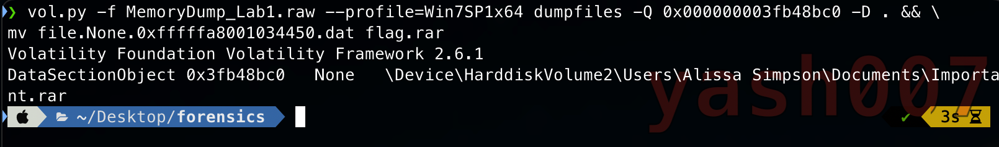
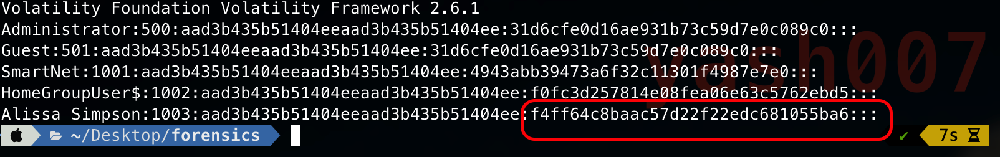
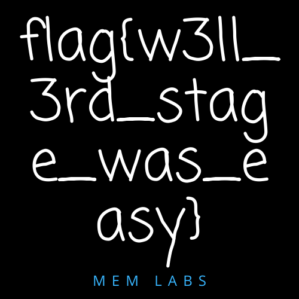

This is Second Blog of Memory Forensic series.
Challenge Description
My sister's computer crashed. We were very fortunate to recover this memory dump. Your job is get all her important files from the system. From what we remember, we suddenly saw a black window pop up with some thing being executed. When the crash happened, she was trying to draw something. Thats all we remember from the time of crash.
Analysis_Stage 0
We will first analyse the sample snapshot using the tool.

Seems like it is Windows 7 machine.
Next we will list down Processes running during the time of memory dump.
Major Points to analysed in this :
- Active Processes.
- Commands Executed.
- Terminated Processes.

We can see some interesting proccesses running such as :
- cmd.exe :- This process executes Command Prompt.We can analyse this process to which commands have been executed.
- mspaint.exe :- This process executes mspaint. We can analyse this process sensitive blue print.
- WinRar.exe :- It can create and view archives in RAR or ZIP file formats, and unpack numerous archive file formats.
Analysis_Stage 1
We will analyse the cmd.exe proccesses to read the commands used and their outputs.

As shown the stdout throws some string "ZmxhZ3t0aDFzXzFzX3RoM18xc3Rfc3Q0ZzMhIX0=" encoded.
We tried to decode the following string.

We have retreived Our First Flag.
Flag-1 : flag{th1s_1s_th3_1st_st4g3!!}
Analysis_Stage 2
So this was new for me , it’s possible to reconstruct the image shown in Paint from the memory dump using a 1337 hacker tool called gimp.

Just Flip and mirror the image get second flag.
Flag : flag{Good_Boy_good_girl}
Analysis_Stage3
Our Third Process is WinRar.exe which we are going to analyse in this section, we will scan memory dump for archive files

We can see some "IMPORTANT.rar" seems to be important, now we will try to extract them using there offset.

Inside the rar file which is password protected.
We will try to Dump the NTLM hashes

We will use NTLM hashes as password to extract the IMPORTANT.rar.
NTLM Hash : F4FF64C8BAAC57D22F22EDC681055BA6
The flag can be found after decrypting file.

So we have found our third Flag as shown.